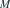
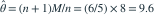

从  中独立抽取 5 个样本，其最大值为 8。采用样本最大值的常数倍构造
中独立抽取 5 个样本，其最大值为 8。采用样本最大值的常数倍构造  的无偏估计，则估计值为多少？
的无偏估计，则估计值为多少？
中独立抽取 5 个样本，其最大值为 8。采用样本最大值的常数倍构造 的无偏估计，则估计值为多少？- A8.0
- B9.6
- C10.0
- D6.4
我已思考，展开答案与解析
正确答案：B
- 记最大值为

，其均值为 。
。 - 无偏修正为

。
易错提醒最大值本身是极大似然估计，但对端点参数有向下偏差。
原模拟卷 A · 模拟卷 A 第 27 题
原创